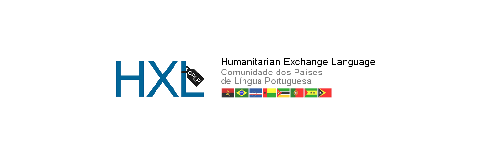

HXL CPLP é um projeto open source, quer contribuir?

Assistente para escolha de hashtags HXL
Sobre
Sistema especialista em português para seleção de hashtags HXL. Usa script python para gerar página HTML estática usando uma base de conhecimentos sobre o Padrão HXL que está encodada em formato JSON.